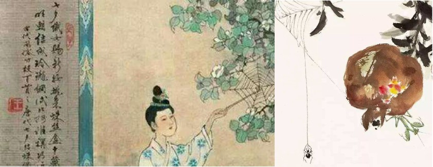
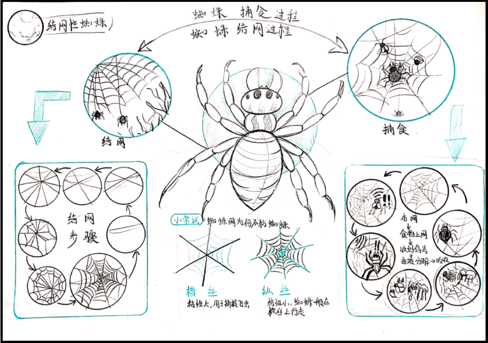
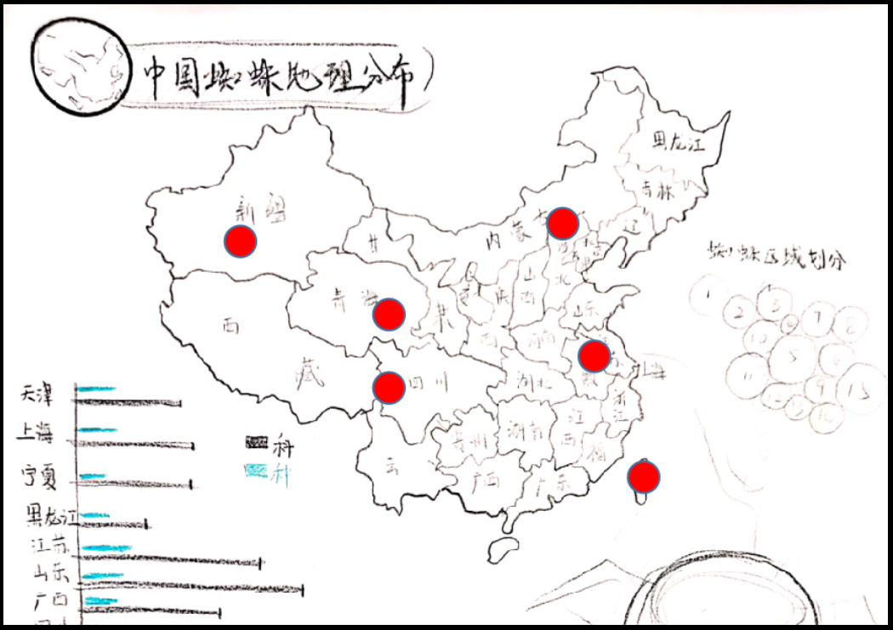

Spider science

- Partner Zhangyun Liuwenrong
Yangyilei
- Adviser:Yangjie
- Finish date:2019/10/15
Painting Style Expression Form

With the determination of the general direction, we also determined the
design style. We intend to express it in the style of partial Chinese painting. One is because we
are the best in China, and this way of expression is more relevat to the theme. The second is that
many Chinese paintings contain the element of spiders. We can make a more more interesting network video
by drawing on it.
With the determination of the general direction, we also determined the design style. We intend to
express it in the style of partial Chinese painting.
|
- Most Geographical Distribution Of Spiders
|
 |
 |
|
Because we are the best spider, we don‘t need a very detailed description of the specific location
of the distribution.
For children, it is important to understand some specific characteristics of
this spider, so we intend to use the outline
of the Chinese map , Blur each province inside, and make a rough
geographical description.
|
Interface Details
The visual presentation of Chinese painting is
relatively unique compared to the traditional animation mode
The video will be presented in a stop-motion animation that is easy for children to understand and more
directly show the webbing process of different spiders to children.
Painted sound and color, added professional science explanation and melodious music to the web video,
making the video playback more substitutive and richer in expression.
Let children watch some fun netting videos while sneaking into some of the most relevant basic knowledge
about spiders
|
|
Introduce some popular science knowledge and some dynamic sound effects
and music into our video, so that the content of the video is richer, the sound is vivid, and it
gives the children a movie-like viewing experience
Click the spider, the spider pans to the corresponding geographic location on the map below. At the same time, the spider's best introduction slowly appears on the right side of the map on the lower right, and the physical picture a-
nd location introduction of the black widow spider appear below the title. The full view on the left starts to play the corresponding video of the Black Widow Spider
|
|
Finished product display(section)
With the determination of the general direction, we also determined the
design style. We intend to express it in the style of partial Chinese painting. One is because we
are the best in China, and this way of expression is more releva
to the theme. The second is that
many Chinese paintings contain the element of spiders. We can make a more more interesting network video
by drawing on it
With the determination of the general direction, we also determined the design style. We intend to
express it in the style of partial Chinese painting. One is because we are the best in China, and
this way of expression is more relevant to the theme. The second is that many Chinese paintings
contain the element of spiders. We can make a more interesting network video by drawing on it.